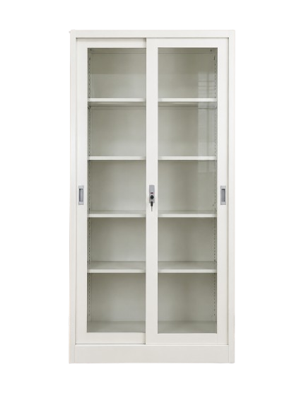
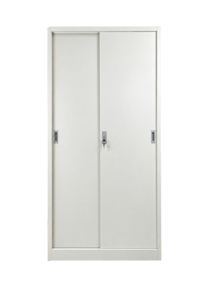

Instansi pemerintah40 unitKantor Pemerintah Daerah
Vivorti VF-4 untuk ruang arsip dinas, lengkap dengan pengiriman dan penataan.

Contoh pengadaan yang sudah kami tangani.
Contoh pengadaan lemari arsip dan loker untuk instansi pemerintah, sekolah, kantor hukum, klinik, dan perusahaan.

Instansi pemerintah40 unitVivorti VF-4 untuk ruang arsip dinas, lengkap dengan pengiriman dan penataan.

 Pendidikan24 unit
Pendidikan24 unit

Layanan hukum12 unit

 Kesehatan18 unit
Kesehatan18 unitZecco ZK-2 dan ZR-3 untuk rekam medis dan berkas administrasi.

 Instansi pemerintah30 unit
Instansi pemerintah30 unitVivorti VP-2 dan Zecco ZK-2 untuk koleksi arsip dan dokumen daerah.

 Perusahaan96 unit
Perusahaan96 unit
 Pendidikan36 unit
Pendidikan36 unit Perusahaan16 unit
Perusahaan16 unitVivorti VP-2 dan Zecco ZF-3 untuk dokumen klien yang harus tersimpan aman.
Kirim denah ruangan dan perkiraan jumlah berkas, kami rekomendasikan modelnya.